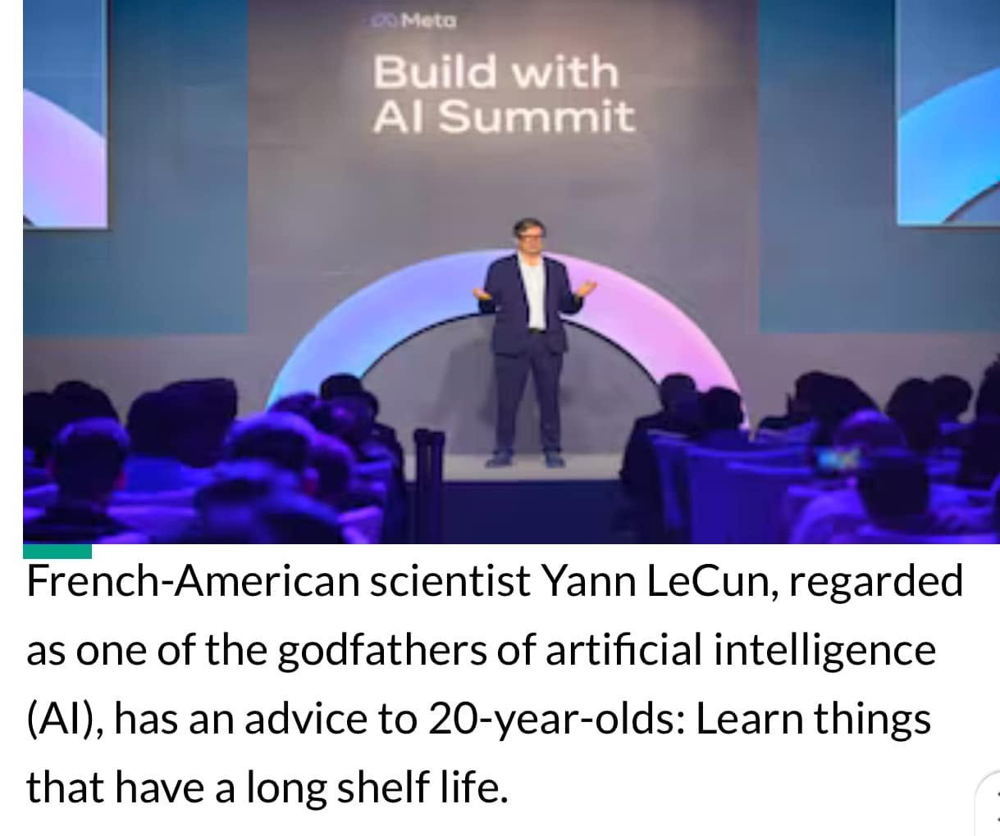

AI年代應該如何學習～給年輕人的建議。
前幾天AI領軍人物 /卷積網路之父 /2018年圖靈獎得主Yann LeCun 接受財經網站Moneycontrol訪談，主持人提問：在面對AI崛起的年代，年輕人應該如何學習？
Yann LeCun說道：去學習那些具有長期價值的基礎學問！
例如：數學、物理、計算機的基礎性學問（不只是編程）…..
關於AI浪潮帶起的憂慮 ，常伴隨一種充滿無力感的喟嘆：
未來的變化無可臆測，十年之後的世界會是什麼樣貌？
誰知道哪些工作會消退，哪些職業會成當紅炸子雞？！
或許那些工作目前還不存在….
沒錯！
30年前誰能知道智慧手機未來會席捲世界？！
20年前多少人睿智到能預見晶片半導體產業將成為主導世界經濟的戰略物資？！
十年前又有誰能預測這波AI革命？！
但如果你問：年輕人應該學習哪些知識與技能才能因應未來的挑戰？
對於這個問題卻我們卻可以提出肯定且有力的答案！
因為～鑑往即可知來。
從西方十六世紀開始的科學革命起，數百年不變的事實：
無論時代如何改變、技術如何創新、典範如何轉移，能掌握基礎科學的高手從不會在高附加價值的主流產業中缺席：
從文藝復興、大航海時代，到第一、二、三次工業革命 ；
從從天文觀測、建築藝術、到醫學、化工、電機、航太、半導體、計算機、通訊、網路、金融科技再到如今的AI…
這些技術都是建立在物理、化學、生物學這些基礎學科之上，只是與時俱進地以不同風貌呈現或是它們分支的應用，而數學——永遠扮演著科學與技術的基石‼️
對於希望未來在職場上擁有良好競爭力或有志從事⾼科技產業的年輕⼈，我再次引用舉世聞名的以⾊列魏茲曼科學研究院院⻑Zajfman的⼀段話來呼應開頭Yann LeCun的提醒：
「對於年輕⼈的科學教育，更需要回歸到最基礎的科學項⽬，⽽不是那些花俏的新學科。
因為在巨變的年代，唯⼀能保證我們所學到的東⻄⼀定會有⽤的就是—基礎知識❗️
返璞歸真才是因應巨變的未來最好的良策！」
此⾔歷久彌真！
